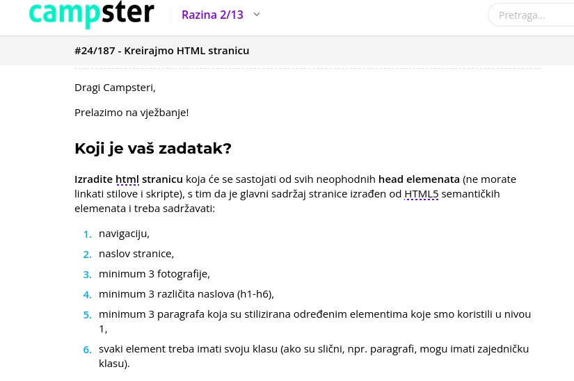
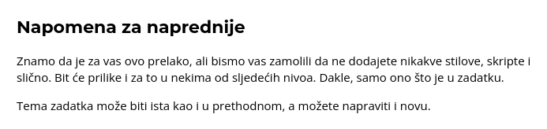
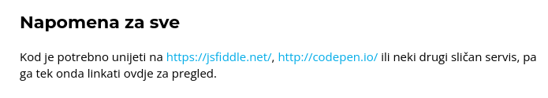

Moja
Web
Stranica
Campster tečaj
Tečaj "Web Development"
3 slike
Prva slika

Druga slika

Treća slika

Ja sam prvi paragraf i stiliziran sam da se odmaknem od slika.
Ja sam drugi paragraf
sad je tekst u drugom redu.
Ja sam treći paragraf i volim stiliziranje